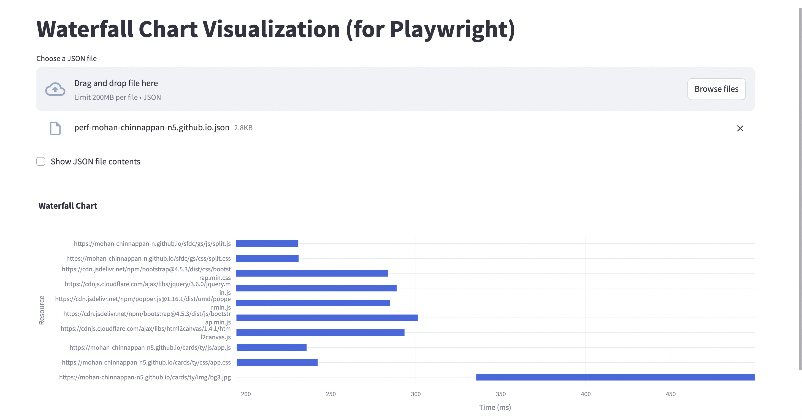

Performance Measurement
Setup Playwright
mkdir playwright-performance-test
cd playwright-performance-test
npm init -y
npm install @playwright/test
urls.json
[
"https://mohan-chinnappan-n5.github.io/cards/ty/ty.html"
]
performance.test.js
const { test, expect } = require('@playwright/test');
const fs = require('fs');
const path = require('path');
test.describe('Performance Metrics', () => {
// Read URLs from urls.json
const urlsFilePath = path.join(__dirname, 'urls.json');
let urls = [];
try {
const data = fs.readFileSync(urlsFilePath, 'utf8');
urls = JSON.parse(data);
} catch (error) {
console.error('Error reading or parsing urls.json:', error);
process.exit(1);
}
urls.forEach((url) => {
test(`Measure performance metrics for ${url}`, async ({ page }) => {
await page.goto(url);
// Wait for the page to fully load
await page.waitForLoadState('load');
// Extract performance metrics
const performanceTiming = await page.evaluate(() => JSON.stringify(window.performance.timing));
const resourceTiming = await page.evaluate(() => JSON.stringify(window.performance.getEntriesByType('resource')));
const jsonObject = JSON.parse(performanceTiming);
jsonObject.resources = JSON.parse(resourceTiming);
// Add HTTP version and resource size
jsonObject.resources = jsonObject.resources.map(resource => {
return {
name: resource.name,
startTime: resource.startTime,
duration: resource.duration,
size: resource.encodedBodySize || resource.transferSize,
httpVersion: resource.nextHopProtocol
};
});
// Write the performance metrics to a file
fs.writeFileSync(`perf-${new URL(url).hostname}.json`, JSON.stringify(jsonObject, null, 2));
});
});
});
Run to create perf-mohan-chinnappan-n5.github.io.json
npx playwright test performance.test.js
Visualize the waterfall for this json
